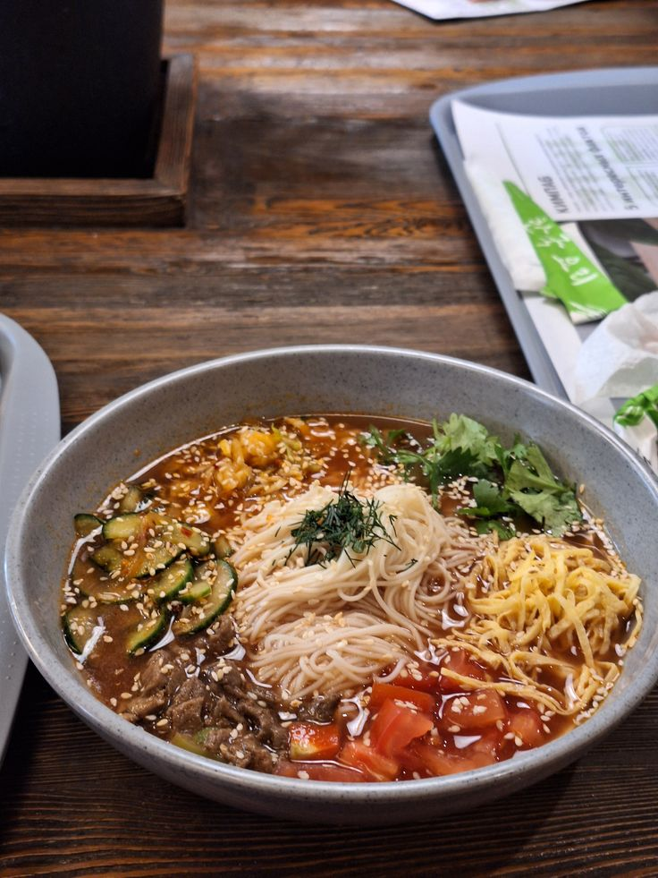
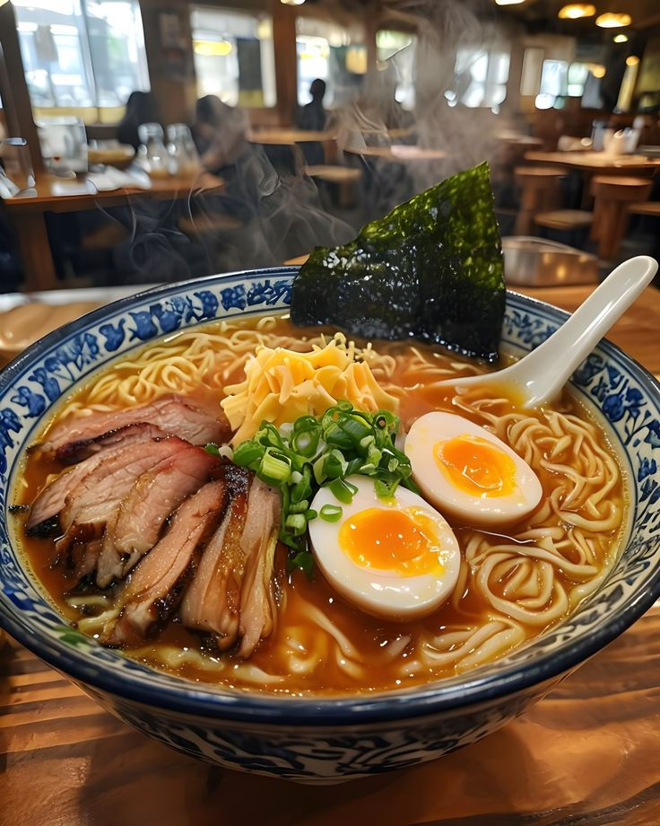
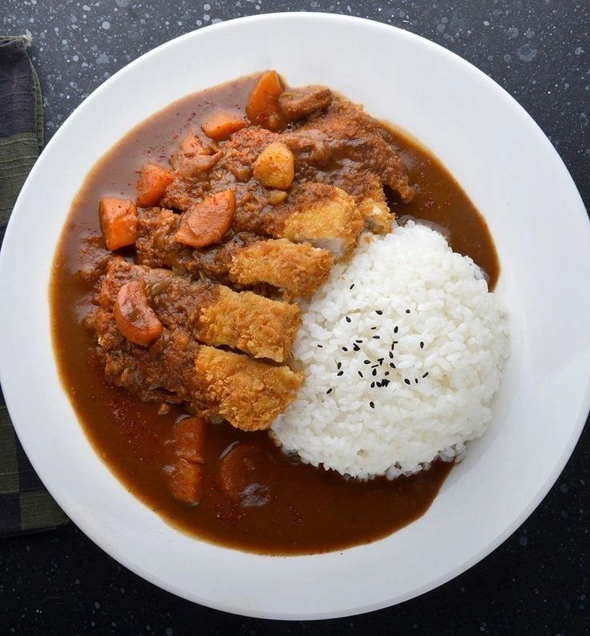

1) Korean Kuksi
Short description
Kuksi is a refreshing Korean-style noodle dish with broth, vegetables, and sliced meat. It is light, flavorful, and perfect for warm days.

Ingredients
- 300 g noodles (thin wheat noodles / somen / buckwheat)
- 1 cucumber (julienned)
- 2 eggs
- 150 g cooked beef or chicken (sliced)
- 2–3 cloves garlic
- 2 tbsp soy sauce
- 1 tbsp vinegar
- Salt & pepper
- Cold broth (water + soy sauce + a bit of vinegar; optional: ice)
Steps
- Cook noodles according to the package and rinse with cold water.
- Make a simple cold broth: mix cold water with soy sauce, vinegar, garlic, salt (add ice if you want).
- Fry or boil eggs and slice them.
- Prepare toppings: cucumber sticks and sliced meat.
- Put noodles in a bowl, add broth, then add toppings and egg on top.
2) Ramen (Quick Home Version)
Short description
Ramen is is a Japanese noodle soup dish consisting of wheat noodles served in a hot, flavorful broth

Ingredients
- 1 pack ramen noodles
- 500–600 ml water or broth
- 1 egg
- Green onions
- Optional: mushrooms, cheese, seaweed, chicken, sesame seeds
Steps
- Boil water (or broth) in a pot.
- Add noodles and cook for 2–3 minutes.
- Add seasoning packet (or your own soy sauce + spices).
- Crack an egg into the soup (or boil it separately for a soft egg).
- Add toppings (green onions, mushrooms, seaweed, etc.).
- Serve hot.
3) Rice with Gravy (Rice + “Podliva”)
Short description
Rice with gravy is a simple, filling meal: fluffy rice served with a warm sauce made from meat and vegetables.

Ingredients
- 1 cup rice
- 200–300 g meat (chicken or beef) OR mushrooms for a vegetarian version
- 1 onion (chopped)
- 1 carrot (optional)
- 1–2 tbsp tomato paste (optional)
- 1 tbsp flour
- 2 tbsp oil
- Salt, pepper, spices
- Water or broth
Steps
- Cook rice and set aside.
- In a pan, heat oil and fry onion (and carrot if using) until soft.
- Add meat and cook until browned.
- Stir in flour and cook for 30 seconds.
- Add tomato paste (optional), then slowly add water/broth while mixing.
- Simmer 10–15 minutes until the gravy thickens. Add salt and spices.
- Serve gravy over rice.